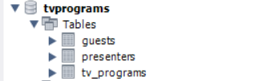
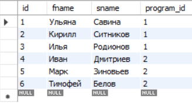
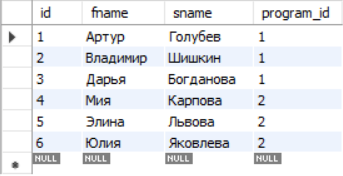
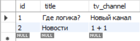
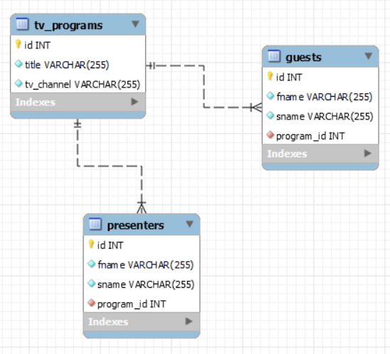

Варіант-9. Предметна область - "Програми передач для телебачення"

Скріншот з СУБД MySQL Workbench, де видно створені таблиці.

Заповнені таблиці відвідувачів.

Заповнені таблиці ведучих.

Заповнені таблиці тв програм.

Фізична модель бази даних з усіма обмеженнями цілісності, типами атрибутів та зв'язками.